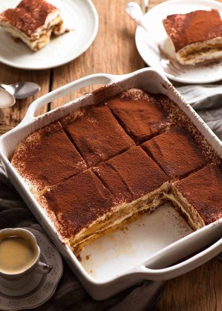
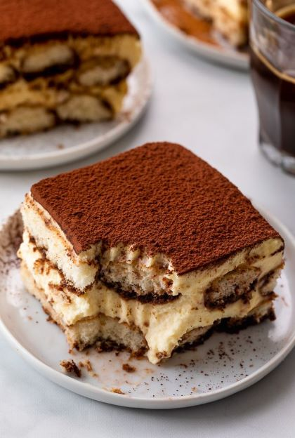

Tiramisu

Description
Tiramisu is an Italian dessert that is filled with rich creamy layers.
Using a traditional Italian recipe by Vanessa Martin, Nagi has created a chef's recipe to
show us how to make tiramisu the proper Italian way!
Ingredients
- Lady fingers
- or Pavesini,
- Savoiardi biscuits
- Mascarpone
- Frangelico
- Coffee
- Vanilla Extract
- Sugar
- Eggs
How to Make Tiramisu!
- Separate the egg whites from the egg yolks
- In Bowl One:
- Mix egg yolks with sugar until creamy
- Add mascarpone and vanilla extract and mix again until creamy
- In Bowl Two:
- Mix egg whites until fluffy
- Mix the components of Bowl One and Bowl Two into one bowl until creamy
- Make coffee espresso
- Pour espresso into a large, wide bowl or plate
- Add Frangelico into bowl/plate
- Lady Fingers in espresso mix
- Place Lady Fingers in baking dish
- Add a layer of cream on top of Lady Fingers
- Repeat Step 6 until baking dish is filled